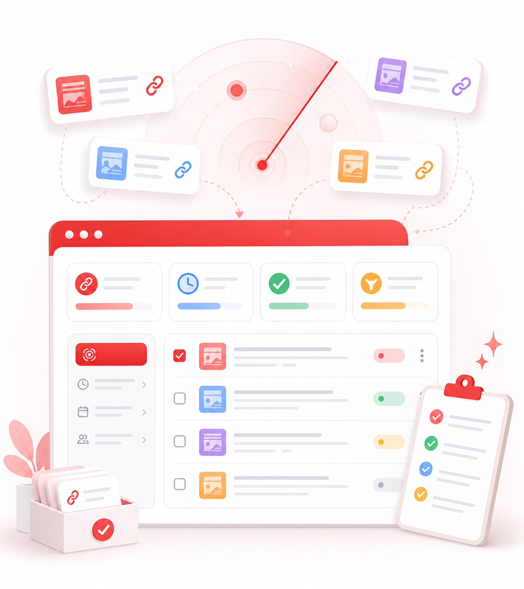

链接工作台
采集、过滤、导出文章链接
扫描当前页面或白名单对话，自动去重并避开自己的文章。

待处理0
已导出0
已忽略0
白名单对话扫描
复用当前标签页，按分组扫描最近 N 天私信里的文章链接。
过滤规则
作者 ID 命中后会自动进入已忽略，不参与导出。
导入链接
支持已有 URL 列表，也可以临时手动添加单批链接。
导出
默认只导出待处理链接，自己的文章会始终排除。
链接列表
可逐条改状态、忽略或删除。
分组管理
系统会复用启动任务时的当前标签页；已缓存或可推导的会话优先只切换私信 iframe，必要时刷新兜底。